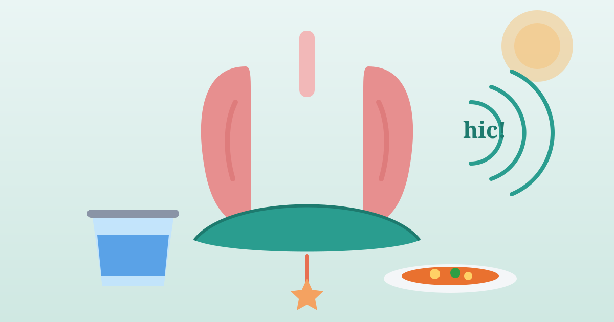

Why Do We Get Hiccups?

Almost everyone has had a hiccup at the worst possible moment — in a quiet exam hall, during a phone call, or just as you take a sip of a fizzy drink. One moment you are breathing normally, and the next your chest jerks, your throat makes a small "hic" sound, and it happens again a few seconds later. Hiccups are harmless most of the time, but they are strange: why would your body start jerking like that, and why does it usually stop on its own?
The short answer is that a hiccup is a reflex — a fast, automatic loop between a muscle, a nerve, and the brain. The main muscle is the diaphragm, the wide sheet under your lungs that powers breathing. When something irritates the nerve that controls it, the diaphragm contracts suddenly, air rushes in, and your voice box snaps shut — that sudden stop is the "hic". Once you know which parts are involved, most hiccups make sense.
What a Hiccup Actually Is
A hiccup is a reflex, a fixed sequence your body runs without asking you. It starts with a sudden contraction of the diaphragm, the dome-shaped muscle between your chest and your belly that powers breathing: when you breathe in, it flattens and pulls down to make room for your lungs; when you breathe out, it relaxes back into its dome shape.
In a hiccup, the diaphragm contracts suddenly and much harder than in a normal breath, sucking air into the lungs in a sharp gulp. A fraction of a second later, the vocal cords — the two small folds of tissue in your voice box — snap shut, and the air stops dead. The whole event takes less than a second: the jerk in your chest is the diaphragm contracting, and the sound is the air being cut off.
The Diaphragm and the Phrenic Nerve
The diaphragm does not decide to contract on its own. It takes its orders from the phrenic nerve, which runs from the neck down through the chest to the diaphragm, carrying signals both ways: it tells the diaphragm when to contract, and it carries information back to the brain about the chest and belly.
A hiccup happens when this loop is disturbed: something irritates the phrenic nerve, or the parts of the brain that control it, and the nerve fires a sudden, extra signal. The diaphragm obeys instantly, because that is its job. The brain does not plan a hiccup and cannot easily cancel one once it has started, which is why hiccups feel so involuntary — the loop is a little like a doorbell with a loose wire, which sometimes rings on its own.
The loop also explains why hiccups keep going once they start: the sudden contraction irritates the area a little more, and the nerve stays sensitive for a while, so a single hiccup is rare and a run of them is normal. The system needs a short time to settle, and until it does, the next hiccup is already on its way.
What Triggers Hiccups
Most hiccups have a simple trigger, and almost all of them involve the stomach or the chest. Eating too quickly is one of the most common: when you swallow food fast, you also swallow air, and your stomach fills and stretches. A stretched stomach sits right against the diaphragm, and the pressure can irritate the phrenic nerve. The same thing happens with a very large meal, or with fizzy drinks, where the gas makes the stomach swell.
Spicy food is another familiar trigger: hot spices irritate the lining of the throat and the top of the stomach, and that irritation can set the reflex off. A sudden change of temperature does it too — a cold drink on a hot day, or a hot meal followed by something cold — and the diaphragm gets caught in the response.
Excitement and laughter can also start hiccups, especially in children: laughing hard turns breathing into short, sharp breaths, with the diaphragm working in quick bursts, and that unusual pattern can tip the reflex into action. Nervousness before an exam does the same, when breathing becomes shallow and uneven. In all these cases the trigger is not a disease or a fault — it is an ordinary event that disturbs a sensitive piece of wiring.
Why Hiccups Come in Bursts
One of the oddest things about hiccups is their rhythm. They rarely come once: they come in a run, every few seconds, sometimes for a minute, sometimes for much longer. The reason is that the reflex is a loop, and a loop repeats itself until something breaks it.
Think of it like a swing. Once the diaphragm has contracted sharply, the nerve and the brainstem — the part of the brain that runs automatic jobs like breathing — stay slightly excited, so the next contraction comes more easily than the first, and the hiccups settle into a steady beat, about once every four to eight seconds. Most runs end when the irritation fades: the stomach empties a little, the temperature settles, or the nerve calms down. Then the loop breaks, and the hiccups stop as suddenly as they began.
Why the "Hic" Sound Happens
The sound comes from the voice box, not from the diaphragm. When the diaphragm contracts and air rushes in, the vocal cords are still open, as in a normal breath. But the rush is so sudden that the brainstem sends a second signal almost immediately: close the airway. The vocal cords snap shut, and the incoming air stops with a small, sharp sound — a glottal stop, the same kind of sound your throat makes at the start of "uh-oh". In a hiccup it is louder because the air is moving faster, and the pitch varies from person to person, because it depends on the size and shape of the voice box: a child's hiccup sounds higher than an adult's.
Common Mistakes
The most common mistake is assuming that a cure that worked once will work every time. Hiccups usually stop on their own within a few minutes, so almost anything you try in those minutes looks like it worked — holding your breath, drinking water, or eating a spoonful of sugar have all been credited with stopping hiccups. In most cases the hiccups were about to stop anyway, and the cure gets the credit while the body did the work.
Another mistake is trying to force the hiccups away by breathing very hard or very fast, which only makes the diaphragm work harder and can keep the loop going. The opposite mistake is panicking about a run that lasts a few minutes: short runs are normal and happen to everyone, including babies before they are born. Hiccups that last for days are rare, and they are the only kind that usually needs a doctor to look at them.
It is also a mistake to think that hiccups mean something is wrong with your lungs. The lungs are only passengers in the event: the diaphragm pulls the air in, and the voice box stops it. The lungs themselves are doing exactly what they always do.
Frequently Asked Questions
Why do babies get hiccups so often?
Babies hiccup more than adults because their nervous system is still learning to control the diaphragm, and because they feed often and swallow air while doing it. A full stomach presses on the diaphragm, and the reflex fires easily. It is normal, and it usually fades as the baby grows.
Can you get hiccups in your sleep?
Yes, and it happens more often than people realise. The reflex loop keeps running while you sleep, and a full stomach or a change in breathing can set it off. Most people sleep through a short run.
Why do hiccups sometimes last for hours?
A run can last for hours when the irritation does not fade — when the stomach stays full, or when the nerve stays sensitive after a bout of coughing or laughing. The loop keeps repeating because nothing has broken it yet. Long runs are uncomfortable, but they usually end once the trigger settles.
Do animals get hiccups?
Yes. Dogs, cats, and many other mammals hiccup, because they have the same diaphragm and phrenic nerve setup. Puppies and kittens hiccup often, just like human babies, usually after eating quickly — smaller sound, same mechanism.
Conclusion
A hiccup is a small reflex with a clear cause: something irritates the phrenic nerve, the diaphragm contracts in a sudden jerk, air rushes in, and the vocal cords snap shut to make the "hic". Food eaten too fast, fizzy drinks, spicy meals, sudden temperature changes, laughter, and excitement are the usual triggers: ordinary events that disturb a sensitive loop. The run repeats because the loop stays excited for a while, and it ends when the irritation fades — a doorbell with a loose wire, ringing until the wire settles.